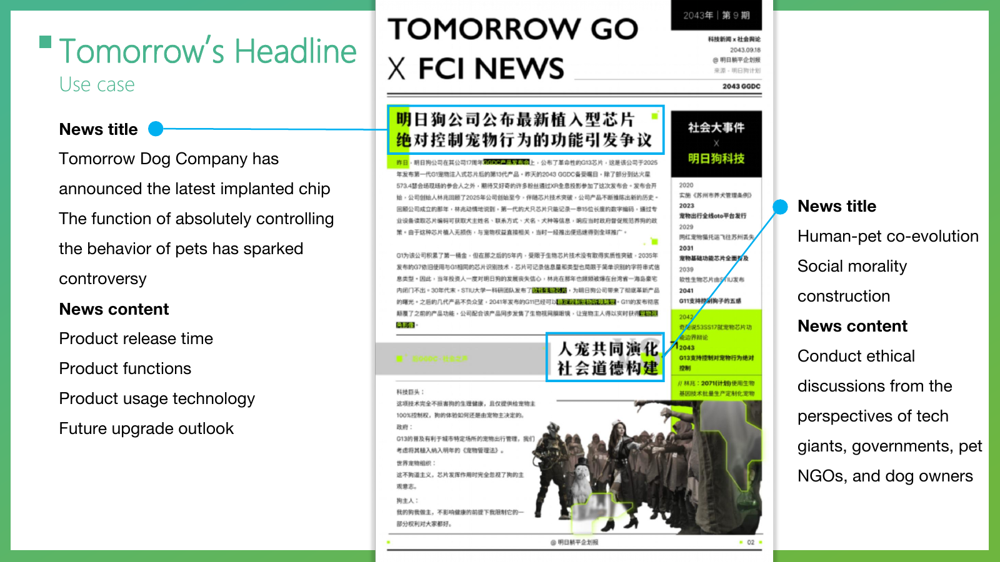

Knowledge
AIGC、设计与老年学跨界授课，建立共同知识底座。
国家艺术基金 2026 · 具身智能养老共创营
Embodied Intelligence for Aging & Elderly Care Design Talent Program
面向深度老龄化社会的设计未来学项目。从设计未来学视角出发，把具身智能、陪护机器人与生成式人工智能转化为可理解、可感知、可落地的养老与适老化设计方案，面向全国遴选青年创意设计人才共创。
项目主旨
本培训汇聚高校为主体、含行业一线的青年创意设计人才与 AI、设计、老年学、康养领域专家，通过跨学科协作，将具身智能、陪护机器人、适老化设计与公众体验连接成一个可创作、可展示、可落地转化的养老设计实验场。围绕《设计未来学视角下的人工智能创作逻辑》展开教学。
AIGC、设计与老年学跨界授课，建立共同知识底座。
青年设计人才围绕六个方向推进概念、原型与落地方案。
优秀成果进入成果展示，形成具身智能养老设计的全景叙事。
后续成果可继续孵化，并面向康养产业与公众传播验证。
六大方向
Aging Vision & Future Narratives
Embodied Intelligence & Companion Robots
Age-friendly Products & Interaction Design
Health Monitoring & Smart Care
Silver Community & Service Design
Elder Culture & Sustainable Aging
课程节奏
跨学科授课建立 AIGC、设计、老年学与康养的共同语言。
学员深化概念、完成试验并形成可展示的养老设计原型。
通过路演、点评、遴选与成果转化推进养老设计成果落地。
痛点库
养老机构移乘辅助设备不足、居家与社区移乘障碍、移乘过程中的尊严损伤等一线痛点。
养老餐“不好吃、不想吃”、进食安全与吞咽风险、慢病膳食与营养失衡等痛点。
日常照护负担、孤独与社会隔离、抑郁与认知症情感沟通等身心照护痛点。
每条痛点含场景、痛点描述、真实案例、过渡方案、机会点与出处，可逐条展开查阅。
查看资料页合作企业库
星动纪元 ROBOTERA、北京具身智能机器人创新中心 X-Humanoid、银河通用 Galbot 等全栈人形与操作本体。
傅利叶 FOURIER 康复机器人、猎户星空 OrionStar 陪伴问询、云迹科技 Yunji 送物巡检等场景化产品。
加速进化 Booster、松延动力 Noetix 等面向教育科研与消费级的人形机器人整机方案。
每家企业含优先级、代表能力、代表型号、能力矩阵、适用场景与官网，可逐条展开对接。
查看资料页语料库
陪护机器人、助行助浴、人机交互、触觉辅助与养老具身系统的前沿研究信号。
可穿戴与环境感知、跌倒检测、步态与生命体征监测、日常活动识别与远程照护信号。
无障碍交互、老年语音助手、对话式智能体、认知支持界面与 AR/VR 适老设计信号。
大模型陪伴、孤独与社会隔离干预、情感计算、居家养老与养老 AI 伦理信号。
案例库
陪护机器人、助行助浴与养老院具身系统的真实落地项目与企业实践。
跌倒检测、可穿戴监测、远程照护与智慧养老平台的真实案例。
老年语音助手、认知支持应用、无障碍交互与适老化改造的真实落地项目。
AI 陪伴、社区嵌入式养老、居家照护与代际共融的真实实践。
移乘护理、下肢外骨骼、可穿戴康复与康复到人形能力迁移的真实探索。
AI 共创工作坊
浏览并选择未来信号。
选择或输入养老挑战，AI 可辅助扩展。
生成 Provotyping Card 与 Interpretation 句式。
生成未来新闻标题和情境图像。
从 2050 目标倒推 2040 与 2030 行动。



Codex Skill 系统
这套 skill 把课程工作流拆成一个总控大 skill 和多个可独立调用的小 skill。学生可以从未来信号开始一步步完成方法产物，也可以在方案完成后继续生成项目文档、PPT、效果图、交互原型、故事板、视频和本地项目档案。
总控大 skill，负责串联完整 Future Design Thinking 流程：从主题界定、未来信号、STEEP、本地挑战、未来解释、Provotyping、明日头条、Backcasting，到最终方案和后期制作。
项目级总控小 skill，负责把前期方法、后期呈现、资产归档和最终交付检查连成一个连续项目工作流。
完成未来信号、STEEP、本地挑战、信号挑战配对、未来解释和概念卡。
把概念转化成可感知的未来新闻和可执行的倒推路线。
根据项目类型推荐合适呈现组合，并调用文档、PPT、图片、原型、视频等制作 skill。
把设计方法产物、生成资产、提示词、源文件和最终交付物保存到学生本地项目文件夹。
本地归档
skill 会把项目整理为 00_project-brief、01_method-process、03_visual-assets、04_prototypes、05_documents、06_presentations、07_video-audio、08_delivery 和 09_ai-process-log，确保过程、资产和最终提交都能被追踪。
future-design-projects/<team-project>/
下载
推荐整套下载，保留总控 skill 与小 skill 的调用关系；也可以打开单个 skill 查看它的 SKILL.md。
Use $skill-installer to install from repo future-design-lab/future-design-lab.github.io these paths: skills/future-design-thinking-workshop, skills/future-design-project-controller, skills/future-signal-scout, skills/steep-analysis, skills/local-challenge-framing, skills/signal-challenge-pairing, skills/future-interpretation-builder, skills/provotyping-card-builder, skills/tomorrow-headline-builder, skills/backcasting-roadmap-builder, skills/project-presentation-router, skills/project-asset-archive, skills/project-delivery-checker. Restart Codex after installation.
产出要求
由未来信号和养老挑战组合形成，用于界定机会与冲突。
用一句可讨论、可修改的未来解释串联 A、B、C 要素。
以 2030/2040/2050 的新闻标题呈现可感知未来。
以民政部门、康养企业、社区、家庭照护者等角色倒推行动路径。
Tools
如果在使用过程中遇到技术问题、Token 充值、API 配置等，可以通过微信扫码联系 manta.ai 获取帮助。
 微信扫码添加
微信扫码添加